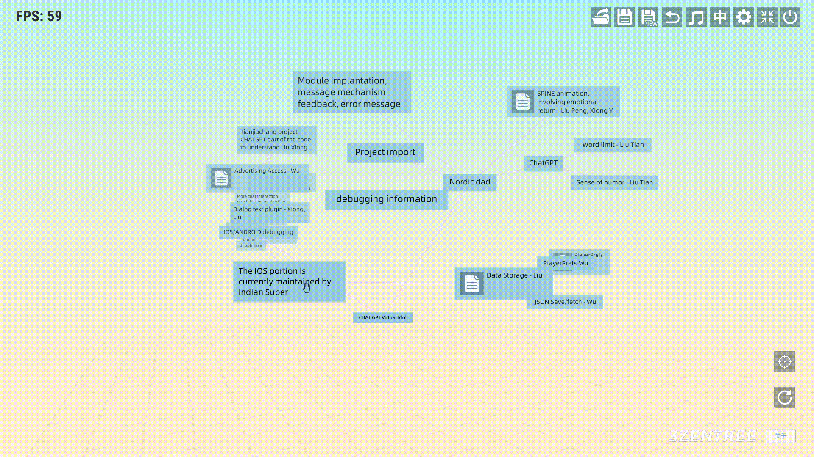
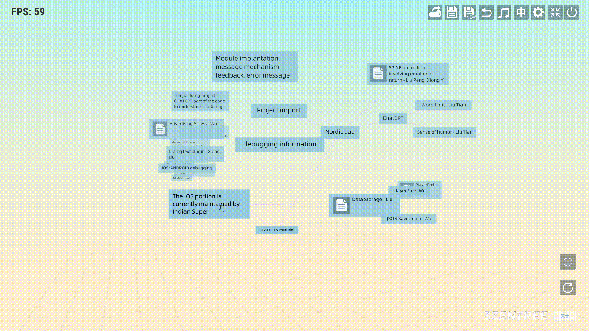

三生之树操作指南(v0.2b) - 连线
连线
-
从结点关联父结点：
鼠标右键呼出结点子菜单，呼出子菜单后鼠标左键点击“箭头”图标，然后鼠标左键按住不放移动到想要连接的结点松开左键即可连接

-
删除连线：
鼠标放在想要删除的连接线上，会提示选中的连接线，然后按下鼠标右键即可删除连接线 
鼠标右键呼出结点子菜单，呼出子菜单后鼠标左键点击“箭头”图标，然后鼠标左键按住不放移动到想要连接的结点松开左键即可连接
鼠标放在想要删除的连接线上，会提示选中的连接线，然后按下鼠标右键即可删除连接线 